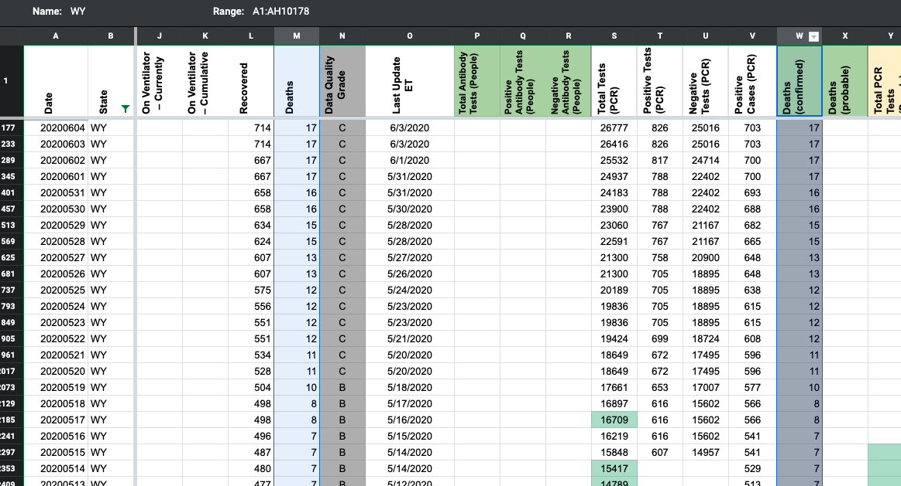
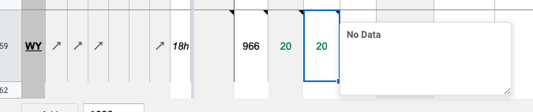

[WY] PCL Historicals and WS2
Death values are historically recorded in both the “Deaths” and “Deaths (Confirmed)” columns for WY. However, WY’s death values represent lumped probable and confirmed figures, so they should only be recorded in the main “Deaths” field.
Comments
pscsharon commented on June 25, 2020 at 10:00 am

MattHilliard commented on June 25, 2020 at 5:09 pm
Confirmed the data matched “Deaths”, then removed “Deaths (Confirmed)” between yesterday and 5/12 (today’s cell was blank).
MattHilliard commented on June 25, 2020 at 8:28 pm
Updated WY’s source note for Deaths (confirmed) to Not Provided. KWS already wrote a private note about this.
jesseandersonumd commented on June 26, 2020 at 8:48 am
DC’ed by JJA 6/26 9:48:00 a.m. ET
Added note in Worksheet 2
